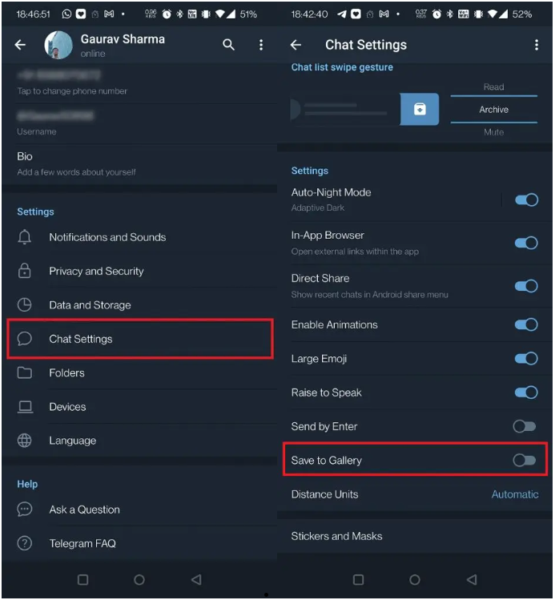

Telegram 照片未显示在手机图库中的 5 个修复
修复 Telegram 照片未在图库中显示的问题
Telegram 应用程序需要相关权限才能下载照片并将其保存到图库应用程序。让我们从这里开始我们的故障排除之旅。
更新 Telegram 应用程序
首先，您应该检查应用程序更新。当更新等待时，应用程序不会按应有的方式运行。因此，请访问手机上的 Play 商店并查找 Telegram 更新。
如果有可用更新，请安装它，然后开始检查手机图库中的图像。
启用保存到图库
Telegram 中有一个设置允许将图像保存在图库中，如果未启用，则不会保存图像。以下是启用此功能的方法：
1. 打开 Telegram 并点击左侧的三条水平线。
2. 现在，从那里选择“聊天设置”。
3. 在下一页上，向下滚动到“保存到图库”选项并启用旁边的开关。

就是这样。现在您的图像开始保存在图库中。
允许存储权限
如果您在设置时未授予 Telegram 存储权限，您的图像将不会保存在手机上。要稍后授予其存储权限，您可以按照以下步骤操作：
1. 点击并按住 Telegram 应用程序图标。
2. 选择应用程序信息，然后在下一页上点击“权限”。
3.在这里，查找“存储”或“文件和媒体”选项并点击它。
4. 在下一页上，如果拒绝，请点击“允许”。
这样您的照片可能会开始出现在图库中。
启用自动下载媒体
如果您的手机不断在移动数据和 WiFi 之间切换，您最好打开自动下载媒体选项，以便每次收到照片时，它都会保存到您的图库中。以下是启用自动下载媒体的方法：
1. 打开 Telegram 并点击左侧的三条水平线。
2. 从给定选项中选择“数据和存储”。
3. 在下一页上，您将看到“自动媒体下载”部分，其中包含一些选项 - “使用移动数据时、通过 WiFi 连接时、漫游时”。

4. 如果您想要自动下载所有数据（即移动数据、WiFi 和罗马漫游），请启用每个选项旁边的开关。

当您启用该开关时，它会进一步要求您选择要自动下载的媒体类型。从这里选择照片即可。如果您也想自动下载视频和文件，您也可以选择它们。
手动保存照片
最后，如果其他方法都不起作用并且您的照片仍然没有出现在图库中，您可以手动保存它。虽然手动保存收到的每张图像是一项艰巨的任务，但并不是每张图像都值得保存，对吧？
以下是手动保存照片的方法：
1 打开您要保存照片的聊天。
2. 现在，点击光子，然后点击右上角的三个点。
3. 从选项中选择“保存到图库”。

就这样，您可以手动将照片保存到图库中。
这些是修复 Telegram 照片未显示在图库中的问题的方法。我希望您能够按照以下方法解决问题。如需更多此类提示和技巧，请继续关注！